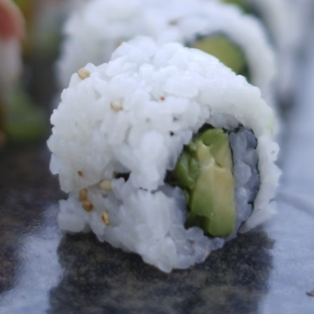
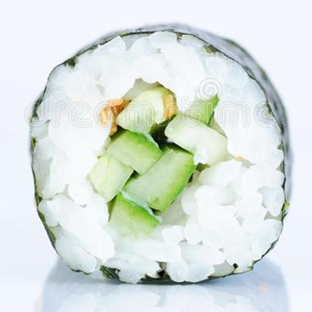

Avocado Maki (with avocado)

Ingredients
- 2 pieces Nori Seaweeds
- 1 cup Sushi Rice
- 5 tablespoons Rice Vinegar
- 1/3 tablespoon Sugar
- 1/3 teaspoon Salt
- 1 piece Avocado
- 1/2 cup Soy Sauce
- 2 tablespoons Wasabi paste
- 1/2 cup Pickled Ginger
- 1 piece Bamboo Mat
Kappa Maki (with cucumber)

Ingredients
- 2 pieces Nori Seaweeds
- 1 cup Sushi Rice
- 5 tablespoons Rice Vinegar
- 1/3 tablespoon Sugar
- 1/3 teaspoon Salt
- 1 cucumber
- 1 piece Bamboo Mat
- 2 tablespoons Wasabi paste